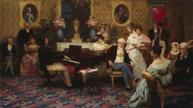
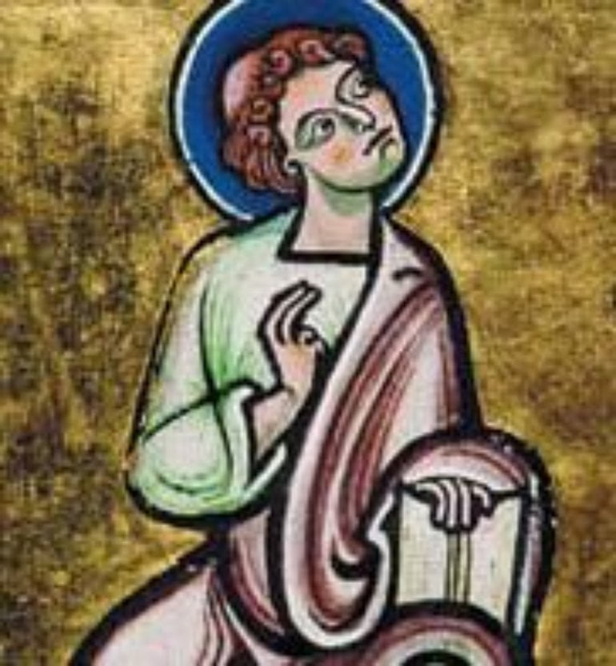
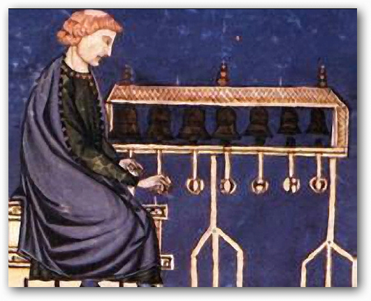
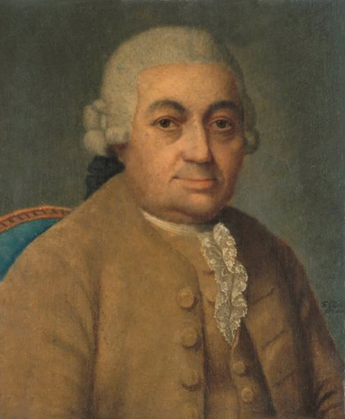
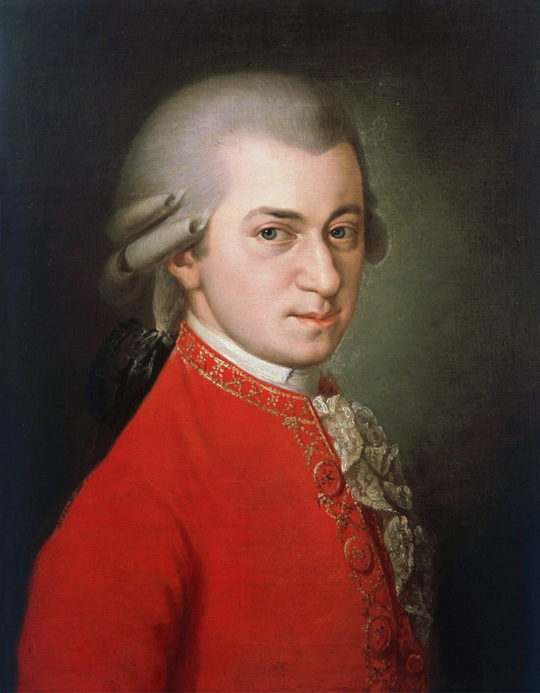
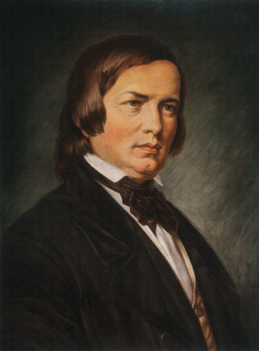
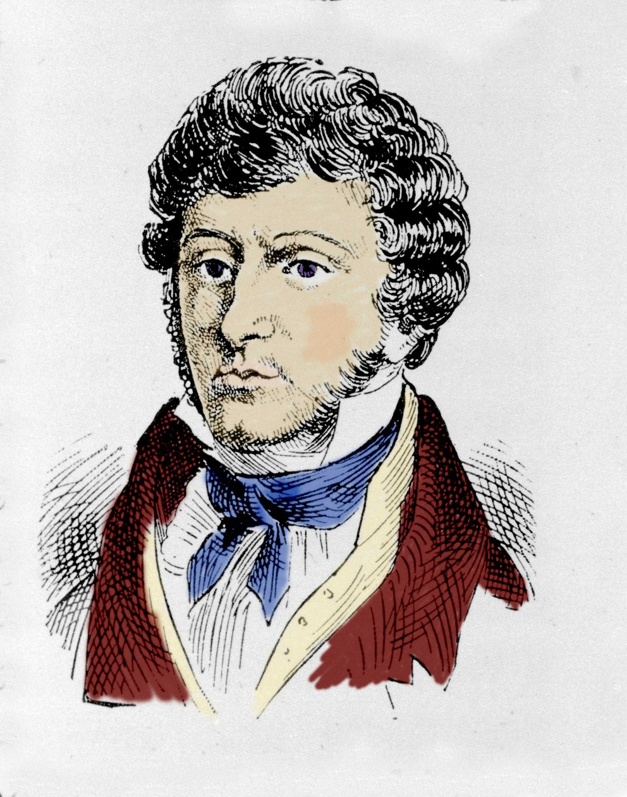
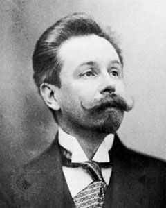
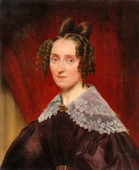

Chopin Piano Concerto No. 2, Larghetto
Music is vital for human expression and crucial to understanding the essence of human nature.
These composers have influenced me the most:
Medieval Era (500-1400 CE)
Medieval music evolved from simple monophonic Gregorian chant, performed without instruments in early Christian churches, to increasingly complex forms including organum (parallel melodies), conductus (processional songs), and eventually the polyphonic motet which combined multiple independent vocal lines with different texts. By the late medieval period, instrumental music had become more prominent both in sacred settings and in secular contexts, where troubadours and trouvères performed on instruments like the rebec, psaltery, and harp, often accompanying songs about courtly love and heroic deeds.
Léonin (1150-1201) & Pérotin (1160-1205)


Virdunt Omnes
Baroque Era (1600-1750):
I don't listen to much baroque music in my daily life, but the influence these composers had on future generations is impossible to ignore, and therefore it is helpful to have a working knowledge of baroque composers and baroque music.

Bach is a household name even in the twenty-first century. Although he did not have access to the modern piano, many of his keyboard works written for earlier keyboard instruments like clavichord or harpsichord are staples for modern piano repertoire. Bach is extremely famous for his use of counterpoint.The works I listen to most are:
- Goldberg Variations, BWV 998: Particularly the famous 1981 Glenn Gould recording. The legend around the origin of this piece is that Bach was commissioned to write the work by a nobleman who had sleeping problems. The idea was that he would lie down and have his harpsichordist play these variations for him when he couldn't sleep.
- Well-Tempered Clavier (Books I & II), BWV 846-893: Another landmark work from Bach, which was meant to show that music could be played in all of the keys without sounding out of tune. The work contains 48 pairs of preludes/fugues for a total of 96 pieces of music. Some of my favorites are:
- Fugue No. 5 in D Major, BWV 850
- Fugue No. 8 in D-Sharp Minor, BWV 853
- Prelude No. 9 in E Major, BWV 854
- Prelude No. 10 in E Minor, BWV 855
- Prelude No. 17 A-Flat Major, 862
- Wachet auf, ruft uns die Stimme, BWV 645: I just recently heard this piece for the first time, played on piano by Murray Perahia. When I first heard it, my thought was 'If Chopin made beauty through emotion, Bach made it through structural perfection.' Here is the recording that introduced me to the piece.
Classical Era (1750-1820):
The classical era was my first serious introduction to classical music. It is the era that starts to see more emphasis on expression (due to figures like Beethoven), but still prioritized a consistency in style and form.
Ludwig van Beethoven
(1770-1827)

Piano Sonata No. 8 in C Minor (Op. 13), II. Adagio cantabile
played by Kolodin Luis
An absolute staple in classical music history--probably the most famous composer of all time. Apparently he was quite a moody fellow, and was easily irritated. He was well-known for playing the piano with great expression and would often break the strings on the pianos he played. Maybe partly due to this former fact, later in life he began to lose his hearing. Instead of giving up on music,he took the legs off his pinao, set it on the ground, and played by feeling the vibrations of the notes. A couple of famous pieces:
- Piano Sonata No. 14 in C-Sharp Minor, Op. 27/2: Arguably his most recognizable piano sonata, the classic 'Moonlight Sonata.' Interestingly, the name was not given by Beethoven himself, but by a German music critic and poet named Ludwig Rellstab in 1832. He compared the first movement to moonlight shining upon Lake Lucerne. The first movement of this sonata was the first piece I learned to play on the piano. The second movement is often underappreciated, but I think it is really beautiful too. Here is a performance of this piece played by Daniel Barenboim.
- Piano Concerto No. 5 in E-Flat Major, Op. 73 "Emperor":
Carl Phillip Emmanuel Bach
(1714-1788)

While he was his own man, he is inescapably J.S. Bach's son. He was one of the composers that aided the transition from the Baroque to the Classical era.
- 12 Variations über die Folie d'Espagne, H. 263: Very touching, reflective, and powerful where it needs to be. My favorite recording is from Shani Diluka, but I cannot find a video of it on YouTube. Instead, this one from Ana-Marija Markovina will have to suffice. It's okay, but it doesn't capture the same mood.
- Die Israeliten in der Wüste, H. 775 / Erster Teil: 1. 'Die Zunge klebt am dürren Gaumen': Beautiful voices in this piece. The translation for the voices is quite grim:
'Our mouths are parched
we can scarcely breathe
God, do you not hear
the complaint of woe, you turn
your face away from us.'
- Symphony in E-Flat Major, Wq. 179, H. 654: I. Prestissimo:
- Sonata for Viola da Gamba and Continuo in C Major, Wq. 136, H. 558:
- Keyboard Sonata in E Minor, Wq. 59/1, H. 281:
- Sonata for Viola da Gamba and Continuo in C Major, Wq. 136, H. 558:
- Fantasia in F-Sharp Minor, Wq. 67 'CPE Bach's Empfindungen':
- Cello Concerto in A Major, Wq. 172, H. 439:
- Sonata in C Minor, Wq. 78: I. Allegro moderato:
Wolfgang Amadeus Mozart
(1756-1791)

Serenade No. 13 in G Major, K. 525 'Eine kleine Nachtmusik' II. Romanze
Mozart possessed exceptional mental composition abilities and could work out complex pieces in his head before writing them down. Mozart's era did view musical talent as a divine gift, and composing without instruments was seen as evidence of exceptional ability--however, this didn't establish mental composition as standard practice for all composers. Personality-wise, Mozart was free-spirited and rebellious; his personality is shown wonderfully in the 1984 movie Amadeus. Here are some pieces:
- Don Giovanni (K. 527): This is the only opera I have watched/listened to all the way through. I learned about it because Kierkeegard talks about it a lot in Either/Or, so I gave it a watch. Honestly, none of the pieces from the opera stuck out to me, but it's good to know of for the lore's sake. Frankly, I'm not the biggest fan of opera.
- Piano Concerto No. 27 in B-Flat Major, K. 595: II. Larghetto: This piece is nice. Here is a recording.
- Serenade No. 13 in G Major, K. 525 'Eine kleine Nachtmusik' II. Romanze: The first movement of this piece is very popular, and you have probably heard it before. However, I would guess that you have not heard the second movement, and it is equally wonderful! Here is a recording from 1982.
Schubert could be placed in either the classical era or romantic. He is commonly considered as the 'last classical composer' and the 'first romantic composer'. Regardless, I threw him in the classical era. He has a crazy amount of works (over 1,000), and I have not come close to listening to all of them. His collection of works is more impressive when you consider the fact that he was only 31 years old when he died of syphilis. Here are some of my favorites from him:
- Piano Sonata No. 21 in B-Flat Major, D. 960: The last of his piano sonatas. I love the mood and melodies in this sonata. My favorite performance is from Sviatoslav Ritcher. He approaches the piece with such patience in this recording, and its wonderful listening. Many other pianists rush through this piece.
- 3 Klavierstücke, No. 1, D. 946: in opposition to the first piece, this one has a faster pace. It makes me think of a bunch of guys on horses racing or something. My favorite recording is from Grigory Sokolov.
- Impromptu No. 3 in G-Flat Major, D. 899: This piece is so beautiful. The rhythm in the left hand is gentle yet confident and carries with a good pace. The melody in the right hand is slower, more contemplative, almost as thought it were trying to convince the left hand to adopt its tempo. Honestly, it's so beautiful, and full of emotion. I think Khatia Buniatishvili played it best.
Romantic Era (1820-1900)
The romantic era is where most of my listening takes place. I think a lot of this has to do with the fact that this is the era wherein the modern piano matured.
Franz Liszt
(1811-1886)

3 Études de concert, S.144, No. 3, 'Un Sospiro'
The first rockstar in music. Liszt was an absolute phenomenon--he was both an unparalleled virtuoso at the piano and also extremely popular with the ladies. They would travel all around to watch him perform. No one had really experienced this level of stardom before, and it is definitely an important piece of music history. It is often argued that Liszt focused more on the act of playing the piano in his music (e.g., composing extremely hard passages for the piano, knowing he would be one of the few that could actually play it) as opposed to embracing true musical expression. This has kind of turned me off to his music, although apparently he turned his attention more to the quality of the music in his later years.
- Ständchen, S. 560 (Trans. from Schubert's Schwanengesang No. 4, D. 957):
- 3 Etudes de Concert, S. 144: No. 3 in D-Flat Major 'Un Sospiro': 'Un Sospiro' in Italian translates to English as 'a sigh.' It's kind of fitting, kind of mysterious. Here's a recording from the awesome Daniil Trifonov.
Robert Schumann
(1810-1856)

Kinderszenen, Op. 15, No. 7, 'Träumerei'
Schumann was married to the composer Clara Schumann and was a well-known music critic in addition to being a composer. Apparently he was quite imaginative in his reviews. Such verbosity and illustration is highlighted in Dr. Alan Walker's biography on Chopin, where the author tells us about Schumann's reviews of Chopin's works, and how their vividness made the latter laugh (it should be noted that this may say more about Chopin than Schumann). At a later point, Schumann would attempt suicide and spend the last two years of his life in a psychiatric institution.
Brahms is a shining figure from the romantic era, and made great use of the modern piano. Brahms was very close with the Schumann's and lived with them at one point. He remained close to Clara afer Robert's death, and there has been much speculation as to whether or not there was something of a romance between them. However, I believe the popular opinion is that they were simply very close friends:
John Field
(1782-1837)

Nocturne No. 6 in F Major, H. 40, 'Cradle Song'
played by Benjamin Frith
John Field was an Irish pianist prodigy from the early romantic period. He is mostly known for innovating the nocturne, a composition genre that would later be perfected by Chopin. Field was highly praised for his piano playing during his lifetime, and was considered the be one of the best amongst contemporary musicians/composers. Muzio Clementi, a composer who was also one of the early piano manufacturers, used Field to market and sell his pianos. I have only listened to Field's nocturnes. Here is a good sampling:
Aleksander Scriabin
(1872-1915)

I don't know much about Scriabin, other than he was labeled by some as the "Russian Chopin."
Louise Farrenc
(1804-1875)

Farrenc was a French composer that was active in Paris during the same time as Chopin--however, no records reflect a meeting between the two.
Chopin is without a doubt the composer I have listened to most in my life, and I really do not care if this is cliche or whatever else. Overall, I have never encountered another composer whose music consistently invokes as powerful of emotions as I experience when listening to almost any of Chopin's music. I'm going to try and present a good 'introduction' to Chopin's music here:
- Nocturne No. 13 in C Minor (Op. 48, No. 1): Chopin is particularly famous for his nocturnes, and this is probably my favorite of them. It's beautiful, and there is a wonderful building up and subsequent crashing down around the middle (a display which interestingly enough does not follow standard nocturne form). I've never heard anything like it, and the 'toppling of the musical tower' is very charged emotionally. Here is a performance of this piece played by Seong-Jin Cho
- Nocturne Op. 32: No. 1 in B Major: To be found within is illustrations of flowery meadows and a swelling of the heart. It's serene, and encapsulates what Arthur Rubinstein meant when he said listening to Chopin is like "coming home." As an additional nod to Rubinstein, my favorite recording of this piece comes from him.
- Nocturne Op. 62: No. 2 in E Major: When I listen to this, I can't help but to imagine the land of Hyrule. I made a rendition of this piece with some different instrumentation and added some Zelda ambience to explore the idea.
- 24 Préludes, Op. 28: No. 7 in A Major:
- 24 Préludes, Op. 28: No. 9 in E Major:
- 24 Préludes, Op. 28: No. 13 in F-Sharp Major:
- 12 Études, Op. 10: No. 1 in C Major:
- 12 Études, Op. 10: No. 3 in E Major "Tristesse":
- 12 Études, Op. 10: No. 11 in E-Flat Major "Arpeggio": Recording from the amazing Yunchan Lim.
- 12 Études, Op. 25: No. 1 in A-Flat Major "Aeolian Harp":
- Piano Concerto No. 2 in F Minor, Op. 21: The second movement of this piece is very famous and considered one of the most emotionally effective piences of piano music. Lisa de la Salle's performance is the best I have heard (link is the second movement, the best!!).
- Piano Sonata No. 2 in B-Flat Minor, Op. 35:The third movement of this sonata is where Chopin's famous funeral march originated. My favorite movement is the first. Martha Argerich has a great recording.
- Ballade No. 1 in G Minor, Op. 23:
- Ballade No. 2 in F Major, Op. 38:
- Ballade No. 4 in F Minor, Op. 52: In Dr. Alan Walker's biography of Chopin, we learn that Chopin himself claimed the melody in this sonata to be the most beautiful he had ever written.
- Andante Spianato et Grande Polonaise Brillante in E-Flat Major, Op. 22: The beginning of the piece (the andante spianato) is so amazing and enchanting. Daniil Trifonov has my favorite recording.